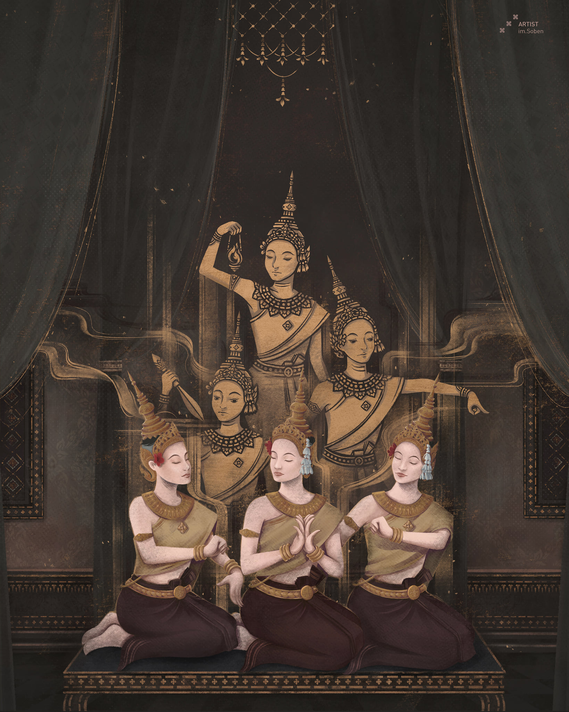

ប្រវត្តិនិងដើមកំណើត សំរាប់សំគាល់ល្ខោនខ្មែរ ត្រូវបានគេ ស្គាល់តាមរយៈការចារជាក្បាច់លោតនៅតាមជញ្ជាំង ប្រាសាទពីព្រោះពួកគេចង់បង្ហាញពីការឆ្លងកាត់ ជំនាន់មួយទៅជំនាន់មួយ ដោយការចងចាំ និងការនិយាយតៗគ្នាពីមាត់មួយទៅមួយ។ ទ្រង់ទ្រាយ នៃសិល្បៈត្រូវបានបង្កើតឡើងមុនសម័យអង្គរ។ ល្ខោនខោល គឺជាល្ខោនដែលមានវ័យចំណាស់ជាងគេបំផុត និង មានការគោរពពីសំណាក់ប្រជាពលរដ្ឋខ្មែរបង្ហាញពីរបៀបវិន័យសង្គម រស់នៅនិងសាសនា ដែលផ្សារភ្ជាប់ពីទំរង់ល្ខោនខ្មែរ និងអ្នកកាន់ពុទ្ធសាសនា។ ល្ខោនផ្សេងទៀតចាប់ផ្តើមក្រោយសម័យអង្គរ ដូចជាសម័យលង្វែក សម័យឧត្តុង្គ និងសម័យចតុមុខ បទភ្លេងល្ខោនដែលល្បីល្បាញបានចងក្រងឡើងដោយ ខ្សែរឿងជាច្រើន និងទេវកថា។ ប្រភេទនៃល្ខោនគឺសម្គាល់លក្ខណៈ ផ្សេងៗគ្នាដោយប្រើប្រាស់ភ្លេង និងអត្ថបទភ្លេងដកចេញពីប្រជុំមាតិការឿងបន្ទរតាម ដូចជាល្ខោនមហោរី ល្ខោនខោល ... ។
